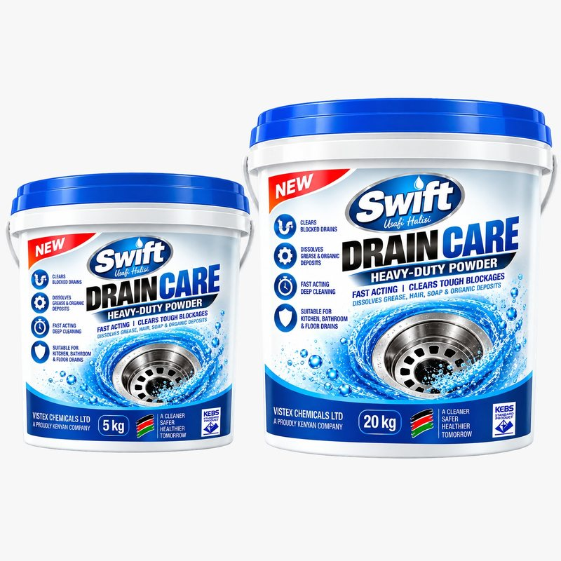

Drain Care
Heavy-duty powder drain opener

Concentrated alkaline powder for slow-flowing and blocked drains. Breaks down the grease, hair, soap residue and organic deposits that build up in kitchen, bathroom, floor and commercial drainage.
- Pack size
- 5 kg / 20 kg
- Form
- Dry, free-flowing powder
- Dilution
- 50–100 g for a slow drain · 100–200 g for a heavy blockage
- Active ingredient
- Caustic soda (sodium hydroxide)
- Shelf life
- 12 months, kept dry
- Range
- Kitchen & Food Safety
- Brand
- Swift — made by Vistex Chemicals Ltd
Features
- Clears blocked drains
- Dissolves grease & organic deposits
- Fast acting
- Kitchen, bathroom & floor drains
How to use
- Ventilate the area, remove standing water where possible, and put on chemical-resistant gloves and splash goggles.
- Slow-flowing drain: add 50–100 g of powder, then carefully add 250–500 ml of cold water. Leave 15–30 minutes and flush with plenty of water.
- Heavy blockage: add 100–200 g of powder, then carefully add 500 ml of cold water. Leave 30–60 minutes and flush thoroughly.
- Always use cold water — never hot. Water on concentrated caustic generates heat and can splash.
Not for use on
- Aluminium
- Zinc
- Other alkali-sensitive materials
- Toilets, unless the system is validated
Danger — corrosive: Contains caustic soda. Causes severe skin burns and serious eye damage. Avoid breathing dust. Store tightly closed, dry, and away from acids and bleach.
Manufactured in Nairobi, Kenya by Vistex Chemicals Ltd under the Swift brand. Request a quote or call 0739 446 655.